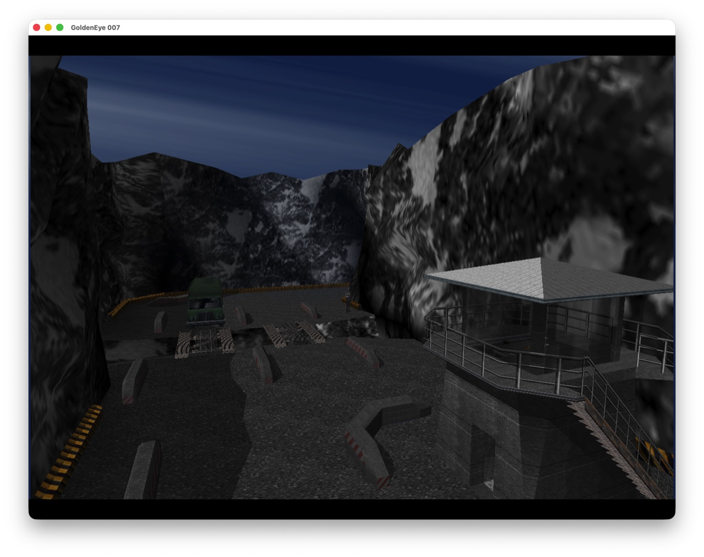
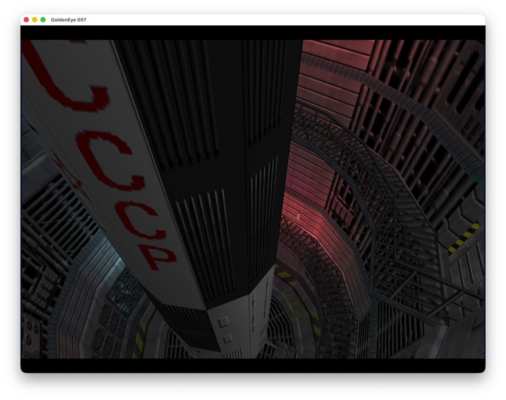
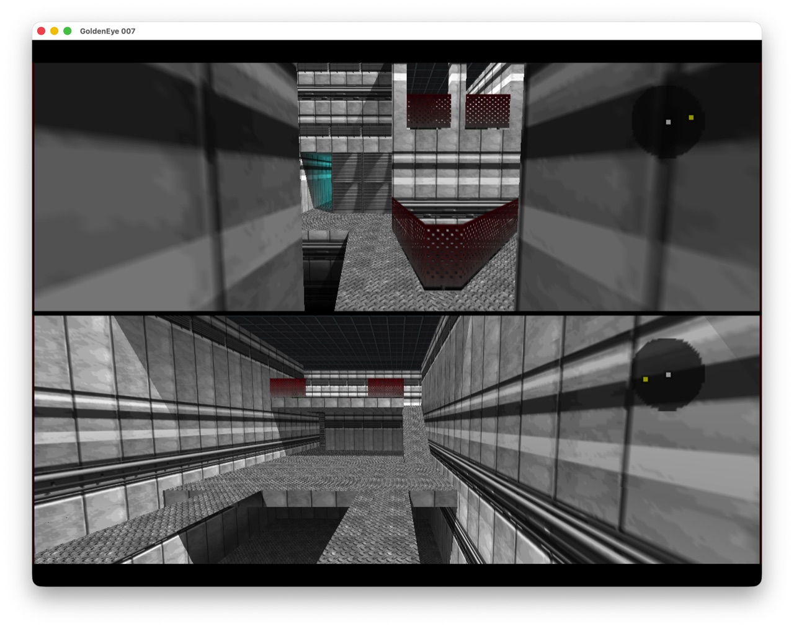
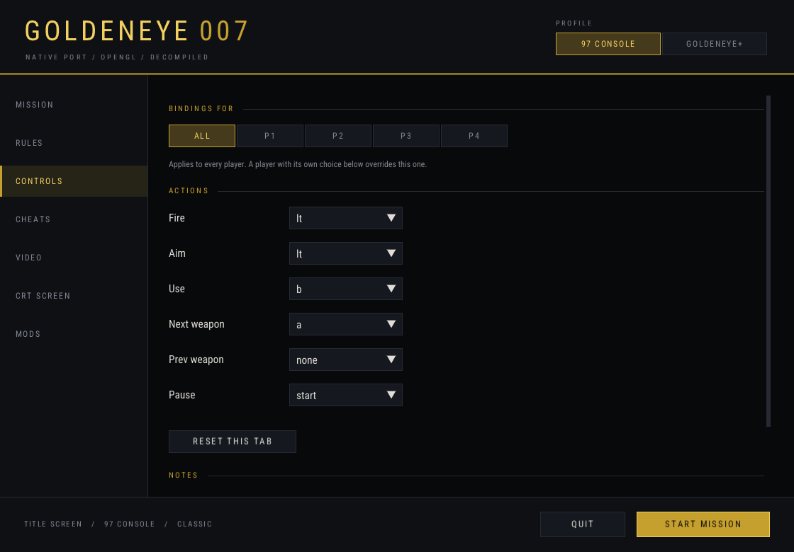

Goldeneye-Native Goldeneye-Native
Goldeneye-Native Goldeneye-Native
NATIVE · MIT · BRING YOUR OWN ROM
Rare's game, 100% decompiled, built native for Windows, macOS and Linux — with a modern platform layer underneath.



function onWeaponFire(weapon)
ge.log("fired: " .. weapon)
end
function onPlayerSpawn(player)
local x, y, z = ge.player_pos(player)
ge.log("spawned at " .. x .. "," .. y)
endEvery loadable level renders and exits without a crash or a hang — measured, not assumed.
Radar, every watch page, saves that persist. Co-op in the campaign, too — something the original never had.
Level, ruleset, cheats, resolution and field of view, before you play — no config file editing.
Lua mods with a live read API into game state, no rebuild required — because this is C, not a ROM.
An emulator hands you the console's limits along with the game. This is the game's own C, compiled for your CPU — which is what makes mouse look, a real resolution, and mods that run alongside it possible at all.
Available now
On the roadmap
Nothing in this project contains game data, and nothing ever will. Your own legal NTSC (US) cartridge, dumped to a file — the build reads it once, at extraction time.
| Size | 12,582,912 bytes |
| Byte order | Big-endian z64 |
| Header magic | 80371240 |